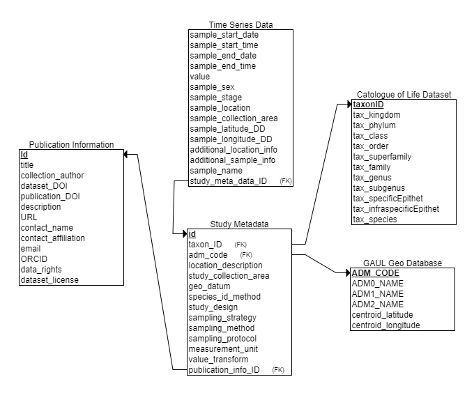

Global Vector Population Dynamics Database (VecDyn) User Guide
IntroductionWhat is VecDyn?Database UsageOverview of data collectionTemporal referencingSpatial referencingData Storage and Data Collection SpecificationsVecDyn Database structure (backend)Data collection models Publication Information TemplateMain Data Collection TemplateData Standardization models / Data integrityTaxonomic Standardization DatabaseGeographic Standardization Database Curator guidelinesAccessing the VecDynPreparing data for uploadAdding data to the databaseUser GuideQuerying the database and downloading dataSubmitting dataRequirements for datasets not in the VecDyn template formatTemplates, Examples & TutorialsIssues, troubleshooting & suggestionsKnown issuesMiscellaneousCreditsContactCiting VecDynReferences
Introduction
Welcome to VectorBiTE’s VecDyn Database User and Curator guidelines. This document provides details and instructions on managing the database and web app including usage e.g. querying (extracting data) and adding new data.
What is VecDyn?
VecDyn is a global database for spatially and temporally explicit presence-absence and abundance data. We accept and distribute data for animal and plant disease vectors.
Database Usage
- Abundance data: Tracking populations over time and space
- Presence absence data: Tracking species presence / absence over time and space
- Point location data: Tracking Geo-point locations of where a species was observed.
Overview of data collection
- What – description of the sample collected – (e.g. species, count)
- When – temporal information about time of collection.
- Where – geographical information about where the collection took place.
- How – operational information about how the collections were made.
- Who – who has responsibility for the collection
Temporal referencing
Temporal referencing in the VecDyn database has been kept as straightforward as possible. Collection fields are set up to gather information on the date-time a collection was started and the date-time a collection ended. Using this information it is easy to calculate information like the duration a trap was set or to calculate the duration of other relevant sampling methods like ecological belt transects or line transects.
Spatial referencing
in order to facilitate mapping and geo-spatial analysis, spatial referencing has been set up to track general information about a study site e.g. country, region, municipality, and also specific information about a sample site, where Global Positioning System (GPS) information can be inputted for each collection site. The following figure demonstrates the spatial information that can be captured per study.
Make assessments about sampling effort
Decide whether data it is representative of a region
Use to overlay against environmental and demographic covariates


Data Storage and Data Collection Specifications
The following section provides an overview of the database structure, describes all the fields in the VecDyn database and provides details on the rational for their requirement.
VecDyn Database structure (backend)
The following image shows the database schema, this describes where the data is stored in the database, relationships between tables and the database structure.

The database back-end consists of five tables:
The Publication Information Table captures general information about the dataset e.g. titles, descriptions, who collected the data and data usage rights.
The Study Meta Data Table captures information describing what was collected or observed, how this was achieved, and general details about where sampling took place. Data in this table captures information that tends to be repeated in population abundance datasets, therefore storing this information once saves storage space improving the scalability of the database.
The Time Series Data Table captures all the information required to produce a Time-Series. Each row should represent a separate observation, at a particular point in time and provide a value for the entity sampled. This table can also capture detailed temporal and spatial information about a sample/observation site e.g. specific coordinates of a trap, environmental characteristics or specific weather conditions at the time of sampling.
The Taxonomic Information Table is a database table which is used to standardise all taxonomic information uploaded into the database. It has been adapted from The Catalogue of Life database, which is the most comprehensive and authoritative global index of species currently available. This enables front-end search (querying) facilities to use internationally recognised naming conventions thus improving the usability of the web application.
The Geographic Database Table is used to standardize all geographic information that is stored in the database. The Global Administrative Unit Layers (GAUL) 2014 dataset is a spatial database that systematizes global administrative regions with a unified coding system at country, first (e.g. departments) and second administrative levels (e.g. districts). Each Administrative unit is assigned a unique ID and is connected to a spatial polygon. Standardizing geographic information will allow users to query data spatially or by using a structured keyword search facility.
Data collection models
Publication Information Template
Meta-data entered into this table should be entered into the VectorBiTE web app via the data submission forms.
| Field Name | Required Y/N | Data format | Details | Additional Notes | Db table |
|---|---|---|---|---|---|
| title | Yes | String | Short title identifying the data set | E.g. “Mosquito Surveillance in Iowa” | Publication Information |
| collection_author | Yes | String | Name of collection author | E.g. name of a government authority, university department or individual researcher. | Publication Information |
| dataset_doi | No | String | Digital Object Identifier (DOI) of the the dataset | If the data set was already published | Publication Information |
| publication_doi | No | String | Second Digital Object Identifier (DOI) | If connected to a published article | Publication Information |
| description | Yes | String | A short description about the dataset and the study objectives | E.g. ‘Long term municipal surveillance of West Nile vector population in Athens, Greece (2000-2010)” | Publication Information |
| url | No | String (URL) | web link to dataset source | ||
| contact_name | Yes | String | Name of person that may be contacted with inquiries about the data | E.g. name of the person who may be contacted with enquiries about the dataset. | Publication Information |
| contact_affiliation | No | String | Author/contact affiliation | If different from collection author | Publication Information |
| No | String | Contact email address | Email address of the person who may be contacted with enquiries about the dataset. | Publication Information | |
| orchid | No | String | Open Researcher and Contributor ID | A unique code used to identify scientific/academic authors and contributors | Publication Information |
| dataset_license | No | String | Creative commons license identification or equivalent. | Where possible provide a creative commons license identification. See https://creativecommons.org for more information. | Publication information |
| data_rights | Yes | String | The data reuse policy for the data set. | Write 'open' if available to the public, 'closed' If data is only available to certain groups or 'embargo' along with release date if under embargo. | Publication information |
| embargo_release_date | No | Date | ISO 8601 date format (YYYY-MM-DD) | Date when the dataset will be freed from the embargo | Publication information |
Main Data Collection Template
The latest vecdyn data collection template is available here
| Field Name | Required Y/N | Data format | Details | Additional Notes | Db table |
|---|---|---|---|---|---|
| title | Yes | String | Short title identifying the data set | E.g. “Mosquito Surveillance in Iowa” | Publication Information |
| taxon | Yes | String | Classification of sample collected | Study Metadata | |
| location_description | Yes | String | Description of study location | In order of smallest geographic subdivision e.g. district, town, county, state, Country | Study Metadata |
| study_collection_area | No | String | The spatial extent (area or volume) of the study. | Information supplied here should represent the total study area. A study area could contain multiple sample sites. | Study Metadata |
| geo_datum | No | String | Geodetic datum | E.g. WGS 84 | Study Metadata |
| gps_obfuscation_info | No | String | GPS obfuscation information | If GPS data obfuscation (e.g. GPS points are intentionally offset from their actual locations) or de-resolution occurs (e.g. GPS precision is intentionally reduced) , a statement on the manner by which this occurred. “GPS locations have been truncated to 3 decimals”; “GPS locations obfuscated using N-Dispersion”; ”No GPS de-resolution was performed” | Study Metadata |
| species_id_method | No | String | Species identification method | A description of the methods used to identify the species e.g. “Morphological” or "Genotype". | Study Metadata |
| study_design | No | String | Study design methodology | Indicate if observational study i.e. prospective, retrospective, or experimental etc | Study Metadata |
| sampling_strategy | No | String | Sampling_strategy, indicate the strategy used to select the sample | E.g. Probability sampling techniques, such as simple random sampling, systematic random sampling and stratified random sampling. Non-probability sampling techniques , such as self-selection sampling, convenience sampling, snowball sampling and purposive sampling. | Study Metadata |
| sampling_method | No | String | Sampling apparatus e.g.trap type, observation method used to sample the entities. | E.g. “CDC light trap” , “Tick drag”, “Quadrat count”, “BG Sentinel Trap” , “Pitfall trap”, “Larval dip”, “Johnson suction trap”, or “Lindgren Funnel Trap” | Study Metadata |
| sampling_protocol | No | String | How entities were sample | The sampling protocol can further describe any distinguishing procedures used during sample collection e.g. if traps were set at specific times of day, or under specific weather conditions. Furthermore, this field should be used to describe any attractants/lures used to attract entities to a trap or collection site. | Study Metadata |
| measurement_unit | Yes | String | Description of exactly what was observed, the unit for “Value” | ‘Count’, ‘Count (millions)’, ‘Harvest’, ‘Index of abundance’, ‘Index of territories’, ‘Leaf area’, ‘Mean Count’, ‘Not Specified’, ‘Percent cover’ and ‘Sample’ | Study Metadata |
| value_transform | No | String | Note if the original values have been transformed – list details of the reference value of any data transformation | E.g .Base Year, Log, Proportion | Study Metadata |
| sample_start_date | No | ISO 8601 date format (YYYY-MM-DD) | Date the data collection started | Note this field is only required when samples /observations were made between specific time frames | Time Series data |
| sample_start_time | No | ISO 8601 time format (hh:mm:ss) | Time the data collection started | Note this field is only required when samples /observations were made between specific time frames | Time Series data |
| sample_end_date | Yes | ISO 8601 date format (YYYY-MM-DD) | Date the data collection ended | Time Series data | |
| sample_end_time | No | ISO 8601 time format (hh:mm:ss) | Time the data collection ended | Time Series data | |
| value | Yes | Integer/float | The numerical amount or result from the sample collection | If presence / absence data, then values should be provided as 1 = species present & 0 = species absent | Time Series data |
| sample_sex | No | String | Information on the sex of the organism sampled | Time Series data | |
| sample_stage | No | String | Information on the life stage of the organism sampled | E.g adult, egg, larva, pupa | Time Series data |
| sample_location | No | String | Name of specific sample location | Time Series data | |
| sample_collection_area | No | string | Area of sample location | If relevant (e.g., when collection method is transect or quadrat), in units of area or volume, the spatial coverage of the sampling unit | Time Series data |
| sample_latitude_dd | No | Float | Latitude of sample area as a decimal degree Specific location of the sample | Ranges [-90,+90] for latitude (north-south measurement) | Time Series data |
| sample_longitude_dd | No | Float | Longitude of sample area as a decimal degree | Ranges [-180,180] for longitude (east-west measurement) | Time Series data |
| sample_environment | No | String | Additional c information relating to the environment | Should be used to describe specific information about the location / environment e.g. forest, field , urban area; elevation. | Time Series data |
| additional_location_info | No | String | Additional geographic information | Should be used to describe specific information about the location e.g. near to house, near playing fields, Near to population of farm animals | Time Series data |
| additional_sample_info | No | String | Additional sample information | Should be used to describe specific information about conditions at the time of sampling e.g. wind speeds, temperatures, weather. | Time Series data |
| sample_name | No | String | A human readable sample name | May exist solely for the benefit of the depositor in organizing their data, use their own internal naming conventions etc. Naming convention is not restricted, but any encoded metadata should be revealed in the other data fields. For example, you may name a sample named ‘Aphid1_StickyTrap_Jan4,’ but you will still have “Sticky Trap” listed in a Collection Method field, and “Jan 4, 2017” in the date field. | Time Series data |
Data Standardization models / Data integrity
Taxonomic Standardization Database
The original The Catalogue of Life database field names had to be renamed for issues concerning Python keywords, the main programming language that was used to build the Web app and control the database.
| Original Field Name | Field Name in VecDyn Db |
|---|---|
| taxonID | taxonomic_ID |
| kingdom | taxonomic_kingdom |
| phylum | taxonomic_phylum |
| class | taxonomic_class |
| order | taxonomic_order |
| superfamily | taxonomic_superfamily |
| genus | taxonomic_genus |
| subgenus | taxonomic_subgenus |
| specificEpithet | taxonomic_specificEpithet |
| infraspecificEpithet | taxonomic_infraspecificEpithet |
| species | taxonomic_species |
Geographic Standardization Database
The Global Administrative Unit Layers (GAUL) 2014 dataset has been restructured in order to provide one unique observation for each individual geographic entry or row within the data table e.g. a specific country or specific region. Each specific geographic entity has as individual conde assigned to it and shape file.
| Field name in original dataset | Field name in VecDyn Db | Description |
|---|---|---|
| ------------------------------ | ADM_CODE | unique code assigned to each administrative unit / shape file |
| ADM0_NAME | ADM0_NAME | country name |
| ADM1_NAME | ADM1_NAME | first administrative subdivision e.g. Florida |
| ADM2_NAME | ADM2_NAME | first administrative subdivision e.g. Manatee County |
| ------------------------------ | centroid_latitude | latitude of centroid representing centre of administrative unit |
| ------------------------------ | centroid_longitude | longitude centroid taking representing centre of administrative unit |
Curator guidelines
Accessing the VecDyn
Preparing data for upload
To prepare a dataset for the VecDyn database, follow the subsequent guidelines
- Download the latest template by right clicking on the following link and selecting ‘save.as’. A completed example data set can be found here. This will help you to understand how to compile data in the VecDyn template format. You can also access an example R Markdown recipe that provides an example of converting an existing data set into a VecDyn formatted dataset.
- You can refer to the VecDyn Data Collection Specifications to guide you through the data collection and compilation process.
- Note that the data upload facility (temporary) is only set up to process one dataset at a time, one data set compromises of one species and one main umbrella geographical location.
Notice that all files are in plain text e.g. ‘.csv’ format, and not in Excel format or similar. This facilitates text parsing by scripts, prevents data loss/corruption, and allows for detailed comparisons of changes via version control systems.
Adding data to the database
For testing purposes (temporary) first download the example data set to try out the process.
Log on and go to the and go to the VectorBiTE web app and go to ‘My collections’. This will only work if you have been granted access rights.
Note that the data upload facility (temporary) is only set up to process one dataset at a time, one data set compromises of one species and one main umbrella geographical location.
Click on ‘Add New Collection’

The first table captures general information about the data provider and the data series. A data collection may provide centralized information about one or many related datasets.

Once the collection information has been registered, you now be able to submit data sets to that collection. Click on ‘Add new data set to collection.

Next select a taxon, it is best to search using the first box first. When you have found the taxon you are after. Hit the ‘select’ button on the aligning row.

Next select a geographical location, this either needs to be country or an ADM1 (e.g. State) or ADM2 (county) administrative subdivision. Again, hit the ‘select’ button on the row of your choice.

Next submit all the study data (metadata) and click on submit once you have completed the page.

Next you need to upload the complete csv. This will only upload fields related to the time series (sample data)

Once completed, you’ll be taken the final page where you can can verify if all the sample data is correct. If it is, click on ‘finish’ button.

However, if there is a problem you can delete or edit each entry. To delete all the entries hit ‘select’ all and scroll down to the bottom of the page and click ‘delete selected’
Note that you can also edit every part of your data after it has been submitted with the exception of taxon names and place names.
Restricted Data
User Guide
Querying the database and downloading data
TODO
Submitting data
If you want to submit a dataset that is not in the vecdyn format, please follow Requirements for data sets not in the VecDyn format. Otherwise please read below
- Download the latest template by right clicking on the following link and selecting ‘save.as’.
A completed example data set can be found here. This will help you to understand how to compile data in the VecDyn template format. You can also access an example R Markdown recipe that provides an example of converting an existing data set into a VecDyn formatted dataset. Notice that all files are in plain text e.g. ‘.csv’ format, and not in Excel format or similar. This facilitates text parsing by scripts, prevents data loss/corruption, and allows for detailed comparisons of changes via version control systems. - You can refer to the VecDyn template field descriptions to guide you through the data collection and compilation process.
- To submit your dataset, upload and submit the dataset via the upload page on the VectorBiTE web app.
- We’ll contact you regarding the outcome of your submission once we have had a look at it.
Requirements for datasets not in the VecDyn template format
If you are submitting a dataset not in the VecDyn format, please make sure you supply the following information.
| Field | Details | Additional Notes |
|---|---|---|
| Data set name | Short title identifying the data set | E.g. Mosquito Surveillance in Iowa |
| Taxon name/s | Classification of samples collected | |
| Country/countries | Country or countries where study was conducted | |
| Description of locations | Description of study locations in order of largest to smallest subdivision | E.g. state, county, town |
| Sample end date & time | The date and time a sample was collected | Time is optional |
| Value | The numerical amount or result from the sample collection | |
| Measurement unit | What is the unit of measurement | E.g. ‘number of individuals’, ‘presence/absence’, ‘Presence only’, ‘proportion’, Percent cover |
##
Templates, Examples & Tutorials
Build a VecDyn Template dataframe in R Markdown.
R markdown recipe: Clean a data set, transform it into the VecDyn format and produce a time series
Issues, troubleshooting & suggestions
Any suggestions or todos with regards to the database (e.g. new columns, schema modifications etc.) can be logged as Issues on GitHub. Issues allow for discussions among multiple users, file attachments, colour-coded labels etc.
Known issues
The FAO’s GUAL data set has been restructured for VecDyn. A new column was created which represents an individual ID for each admin unit. This creates a few minor issues, since some region codes are not unique and therefore, an additional ‘b’ has been added to the end of each ADM_CODE’ which has been used in VecDyn as a ‘Primary key’.
| ADM_CODE | ADM2_NAME | ADM1_NAME | ADM0_NAME |
|---|---|---|---|
| 48472 | Administrative unit not available | Rukwa | United Republic of Tanzania |
| 48472b | Administrative unit not available | Mwanza | United Republic of Tanzania |
| 22917 | Ifelodun | Kwara | Nigeria |
| 23036 | Surulere | Oyo | Nigeria |
| 22917b | Ifelodun | Osun | Nigeria |
| 23036b | Surulere | Lagos | Nigeria |
| 22602 | Osisioma Ngwa | Abia | Nigeria |
| 22602b | Ukwa West | Abia | Nigeria |
| 15426 | Gnral. Antonio Elizalde | Guayas | Ecuador |
| 15426b | Milagro | Guayas | Ecuador |
Miscellaneous
The GPDD directory also contains the documentation of the Global Population Dynamics Database, a pre-existing database of population dynamics, hosted in Silwood Park, Imperial College London since 1999.
Credits
TODO
Contact
Submitting data
Citing VecDyn
TODO
References
TODO